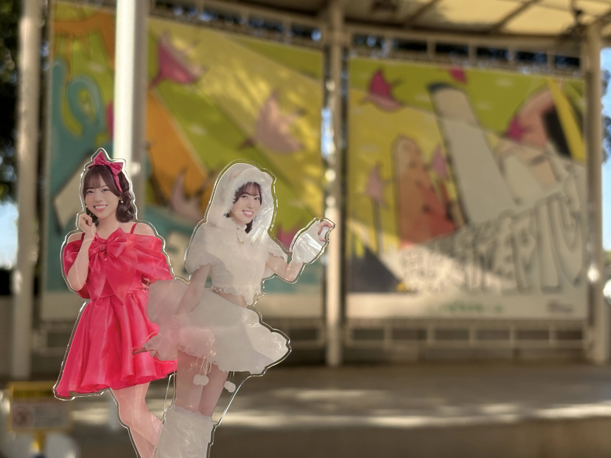
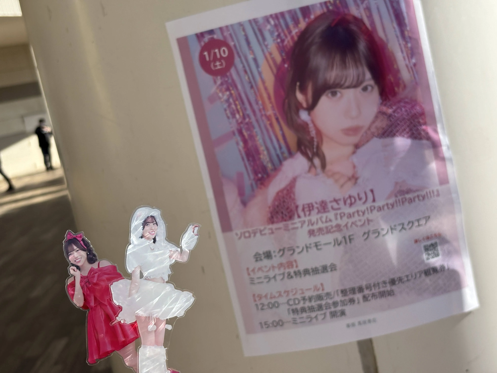
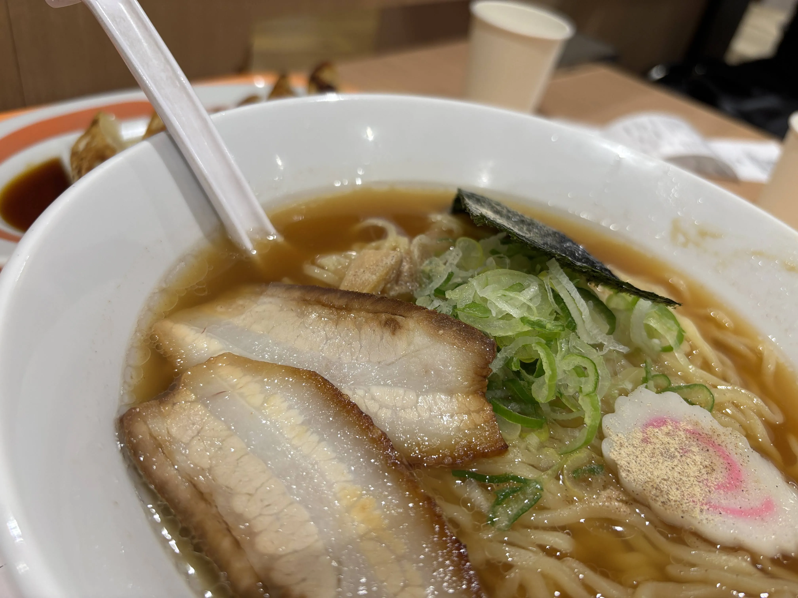

僕の推しの伊達さゆりさんのミニアルバムが今年の3月25日に発売されるという事でリリースイベントが開催。
本日は最初のリリースイベント、幕張公演にやってきました。

11時40分から整列開始という事だったのですが、余裕を持って9時台に到着。
並ぶワケにもいかないので周辺をブラブラしたり、コンビニへ行ったりしました。
スタッフの方が手慣れていないのか、整列場所が途中で変わったりなど色々とありましたが、先頭の方に並ぶ事が出来ました。結構寒かったですが…笑
とりあえず通常版のCDを3枚購入。整理番号は後ろの方でした。（知っていました）

リハーサルから新曲を披露（？）してくれるなどありましたよ。後ろの方でしたが、普段のライブよりは断然ステージに近かったので結構良かったです。
曲や衣装もとても良かったですね。「自LOVE♡♡」（みずからぶ、と読むそうです）、アップテンポの曲で楽しかったです。
おまけ。ヲタクとラーメンを食べ、サウナを共にし、お酒を呑んでいろいろ話をしていました。
話の内容には気をつけようと思いました…苦笑
